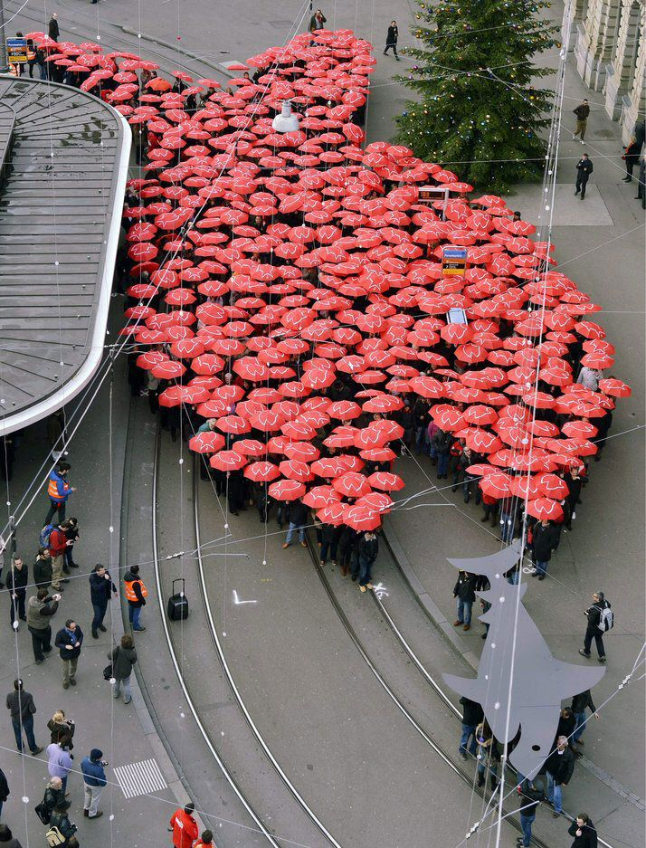

Submitted on Sat, 11/07/2015 - 1:55pm
By Joe Allen - Jacobin, November 3, 2015
It took the United Parcel Service one hundred and eight years to get to its current position in the world today, less than half that time for Walmart, DHL, and FedEx, and just over two decades for Amazon. The speed of transformation in the global logistics industry is rapidly increasing, spurred on by Amazon’s current building spree across North America and Europe.
For example, according to Business Insider,
Amazon has added 21 new logistics facilities globally over the last 12 months, up 14% from last year, bringing the total to 173 facilities worldwide. Of the 173 facilities, 104 are in the North America region, with the rest spread across Europe and Asia. The 173 logistics facilities include the large fulfillment-center warehouse; sortation centers, where packages get presorted for shipping; and Prime Now hub, a separate building to store one-hour delivery items.
Clearly big things are afoot. Amazon’s recent job listing strongly suggests it is building a senior staff for a major logistics and transportation department that includes a “Senior Program Manager — Last Mile Transportation SME,” “Driver Experience Manager,” and “Network Manager — Amazon Logistics Freight.” A former Amazon engineer told Business Insider, “If Amazon can stop paying FedEx and start controlling their own destiny in terms of the costs of fulfillment and shipping and transportation, it increases their profit margin.”
Another sign of the rapidly transforming logistics industry is UPS’s recent purchase of the Chicago-based Coyote Logistics for $1.8 billion. Coyote is a new model of freight forwarding; it has no vehicles or warehouses of its own, and instead provides logistics for 12,000 shippers with a network of 35,000 local, regional, and national carriers.
A decade earlier UPS made its largest acquisition up to that point when it bought Overnite Transportation, a huge non-union freight company. UPS’s purchase of Overnite was a major move into the traditional freight business, and followed FedEx’s acquisition of several regional freight companies and creation of FedEx Freight.
FedEx is also trying to keep up with the competitive pressures from Amazon and UPS. Earlier this year it acquired the Dutch parcel-delivery company TNT Express for $4.8 billion — giving it access to TNT’s Europe-wide road network to compete with UPS and DHL — and FedEx Ground has announced plans to build large facilities in Middleton, CT; Ocala, FL; and Hamburg, NY.
DHL — formally DHL Express, a division of Deutsche Post — is also reinvesting substantially in its US operations, including a $108 million upgrade to its Cincinnati air hub that processes about 46 million international shipments each year. Though it is smaller than UPS’s nearby Worldport or FedEx’s Superhub, DHL’s Cincinnati operations primarily focus on international shipments from Asia and Europe.
“If DHL is making investments in infrastructure expansion in Cincinnati, that means they’re very confident that they’re going to continue to grow their intercontinental network,” says Brian Clancy, a managing director with Logistics Capital & Strategy, a Virginia-based transportation consulting firm.
Meanwhile, DHL Global Forwarding signed an agreement with a Kazakhstan-based express company to speed the transit of rail-based freight across the Eurasian continent as an alternative to traditional sea and airfreight. In addition, it announced plans to establish its own parcel network in Austria by 2016 and to invest €47 million in sub-Saharan Africa as part of an effort to derive 30 percent of its revenue from emerging markets by 2020.
Not to be left out of the scramble, the United States Postal Service (USPS), the venerable, much-derided, and constitutionally mandated mail carrier, has emerged as a major player in the logistics industry.
This summer, Bloomberg Businessweek called the USPS “an extension of Amazon” and noted that “Amazon receives a deep discount from the post office because the e-tailer does so much of its own processing — including providing computerized address lists to make it easier for carriers to tailor their delivery routes for faster drop-offs.” A 2014 estimate by Bernstein Research, which tracks the shipping industry, put the USPS’s shipments and deliveries at 40 percent of Amazon’s volume, or almost 150 million items (UPS accounted for 20–25 percent and FedEx 15–20 percent).
While UPS, FedEx, DHL, and the USPS are fierce competitors, many people would be surprised by the cooperation between the logistics giants. Both FedEx and UPS have discounted residential package delivery services with the USPS called, respectively, SmartPost and SurePost. And the volume is enormous. Last year, the Wall Street Journal reported:
For FedEx alone, the post office delivers an average of 2.2 million packages a day, or about 30% of the express-mail company’s total U.S. ground segment. UPS won’t specify how many of its shipments go through the post office, but a regulatory filing indicates those types of lightweight shipments accounted for 40% — or about 37 million packages — of its total increase in ground shipments in 2012.
Both SmartPost and SurePost services are designed to deal with the unwanted costs of the “last mile” — the industry term for the final step in the delivery process, handing over the package to the recipient. FedEx or UPS may have every address in the United States in their databases, but neither wants to go to every address every day, and they certainly don’t want to make a second attempt if the recipient isn’t home the first time around. The USPS, on the other hand, has to go to each address daily to delivery first-class mail.
Ultimately, UPS and FedEx want to snatch up the most profitable areas and dump the rest. For example, FedEx beat out UPS in 2013 for a seven-year, $10.5 billion contract with the USPS to fly its mail between US airports.
The rising volume of packages has transformed the USPS, necessitating major capital investment. In 2013, the post office spent $200 million to furnish its delivery vehicles with handheld scanners to provide real-time package tracking. And its plan to replace its fleet of 163,000 delivery trucks, which were not designed to hold packages, could cost as much as $4.5 billion.
 The debate on how to revive the troubled U.S. labor movement has been around for decades. Labor activists generally believe that much greater rank-and-file democracy and workplace militancy is the key to labor renewal. However, an essential perspective that is usually missing from the conversation is well represented by Staughton Lynd’s “Solidarity Unionism: Rebuilding the Labor Movement from Below,” which was first published in 1992 and has been recently reissued.
The debate on how to revive the troubled U.S. labor movement has been around for decades. Labor activists generally believe that much greater rank-and-file democracy and workplace militancy is the key to labor renewal. However, an essential perspective that is usually missing from the conversation is well represented by Staughton Lynd’s “Solidarity Unionism: Rebuilding the Labor Movement from Below,” which was first published in 1992 and has been recently reissued. This is the second part of a
This is the second part of a